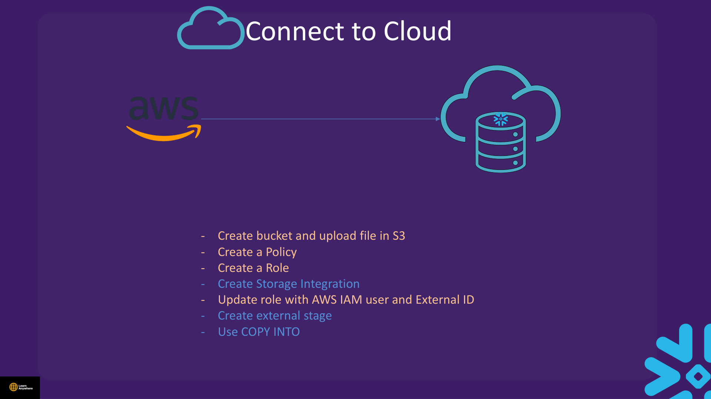

Lectures in this section
Every lecture below links to the notes that cover it. Sample data: data/MOCK.csv. IAM template: data/AWS_POLICY.txt.
- Connect To Cloud Concept 1:59
- Demo : Create AWS Account 1:50
- Demo : Connection AWS to Snowflake 11:00 Connect To Cloud/Cloud connect.txt · data/AWS_POLICY.txt
- Demo : Unload to Cloud 3:38 Connect To Cloud/Cloud Unload.txt
- Connect to cloud Quiz
Connect To Cloud Concept
Section 4 covered files inside Snowflake internal stages. This section covers files in your cloud storage (S3, Azure Blob, GCS). Snowflake reads and writes them through external stages backed by storage integrations — no long-lived credentials stored in Snowflake.
AWS_KEY_ID / AWS_SECRET_KEY in SQL. External tables and Iceberg are covered in Section 15.
Demo : Create AWS Account
The course demo walks through creating a free-tier AWS account, an S3 bucket, and uploading MOCK.csv. At a high level:
- Sign up at AWS and open the S3 console.
- Create a bucket in a region compatible with your Snowflake account.
- Upload
MOCK.csvfrom the coursedata/folder to a prefix such ass3://your-bucket/lab/. - Create an IAM policy and role — use the template in
data/AWS_POLICY.txtwith your bucket and prefix placeholders.
Demo : Connection AWS to Snowflake
Course file: Connect To Cloud/Cloud connect.txt · IAM template: data/AWS_POLICY.txt
Setup workflow (AWS)
The course teaches a seven-step sequence to wire Snowflake to S3. Order matters — especially steps 4 and 5, where the storage integration must exist before you can learn the IAM user and external ID Snowflake generated.
- Create the S3 bucket and upload the file. Place
MOCK.csvunder a prefix such ass3://your-bucket/lab/in a region compatible with your Snowflake account. - Create an IAM policy. Grant
s3:GetObject,s3:PutObject,s3:ListBucket, and related actions on the bucket prefix — usedata/AWS_POLICY.txtas a template. - Create an IAM role in AWS. Attach the S3 policy. The trust policy is incomplete at this point — you do not yet have Snowflake's IAM user ARN or external ID.
- Create a storage integration in Snowflake. Reference the IAM role ARN and set
STORAGE_ALLOWED_LOCATIONSto the bucket prefix. Snowflake registers the trust relationship and generates credentials on its side. - Update the AWS role trust policy with
STORAGE_AWS_IAM_USER_ARNandSTORAGE_AWS_EXTERNAL_IDfromDESC INTEGRATION. This step comes after the integration exists because Snowflake only reveals those values once the integration object is created — a chicken-and-egg problem if you try to finish the trust policy first. - Create an external stage pointing at the integration and S3 URL; verify with
LIST @stage. - Run
COPY INTOto load the table from the external stage.

COPY INTO — trust policy update follows integration creation.DESC INTEGRATION has nothing to return and the AWS role cannot trust Snowflake. Create the integration, read the two values, then patch the trust policy.
IAM policy template
{
"Version": "2012-10-17",
"Statement": [
{
"Effect": "Allow",
"Action": [
"s3:PutObject", "s3:GetObject", "s3:GetObjectVersion",
"s3:DeleteObject", "s3:DeleteObjectVersion"
],
"Resource": "arn:aws:s3:::your-bucket/your-prefix/*"
},
{
"Effect": "Allow",
"Action": ["s3:ListBucket", "s3:GetBucketLocation"],
"Resource": "arn:aws:s3:::your-bucket",
"Condition": {
"StringLike": { "s3:prefix": ["your-prefix/*"] }
}
}
]
}USE ROLE ACCOUNTADMIN;
USE WAREHOUSE COMPUTE_WH;
USE DATABASE la_db;
USE SCHEMA la_schema;
CREATE OR REPLACE STORAGE INTEGRATION sample_int
TYPE = EXTERNAL_STAGE
STORAGE_PROVIDER = 'S3'
ENABLED = TRUE
STORAGE_AWS_ROLE_ARN = 'arn:aws:iam::<aws_account_id>:role/<sf_role_name>'
STORAGE_ALLOWED_LOCATIONS = ('s3://your-bucket/lab/');
DESC INTEGRATION sample_int;
-- Copy STORAGE_AWS_IAM_USER_ARN and STORAGE_AWS_EXTERNAL_ID into AWS trust policy
CREATE OR REPLACE FILE FORMAT mycsvformat
TYPE = CSV FIELD_DELIMITER = ',' SKIP_HEADER = 1;
CREATE OR REPLACE STAGE my_s3_stage
STORAGE_INTEGRATION = sample_int
URL = 's3://your-bucket/lab/'
FILE_FORMAT = mycsvformat;
DESC STAGE my_s3_stage;
LIST @my_s3_stage;
CREATE OR REPLACE TABLE new_table_cloud (
customer VARCHAR, first_name VARCHAR, last_name VARCHAR,
region VARCHAR, email VARCHAR, gender VARCHAR, "ORDER" INTEGER
);
COPY INTO new_table_cloud
FROM @my_s3_stage
PATTERN = '.*MOCK.*\\.csv';
SELECT COUNT(*) FROM new_table_cloud;Cloud connect.txt demonstrates a deprecated COPY INTO 's3://…' credentials=(AWS_KEY_ID=… AWS_SECRET_KEY=…) pattern with real keys. Replace with storage integrations for exams and real deployments.
STORAGE_ALLOWED_LOCATIONS to a single file path (…/MOCK.csv). Use a prefix (folder path ending in /) so the stage can list and load multiple files.
Demo : Unload to Cloud
Course file: Connect To Cloud/Cloud Unload.txt
Unloading reverses the flow: COPY INTO @external_stage FROM table writes table data to files in your bucket. Internal-stage unloads (then GET locally) are in Section 4.
s3://your-bucket/
CSV files
ALTER STORAGE INTEGRATION sample_int
SET STORAGE_ALLOWED_LOCATIONS = ('s3://your-bucket/');
DESC INTEGRATION sample_int;
CREATE OR REPLACE STAGE my_s3_unload
STORAGE_INTEGRATION = sample_int
URL = 's3://your-bucket/unload/'
FILE_FORMAT = mycsvformat;
-- Unload via stage
COPY INTO @my_s3_unload
FROM new_table_cloud
FILE_FORMAT = (FORMAT_NAME = mycsvformat, COMPRESSION = NONE)
OVERWRITE = TRUE
HEADER = TRUE;
-- Or unload directly to path (still uses integration — no inline keys)
COPY INTO 's3://your-bucket/unload/'
FROM new_table_cloud
STORAGE_INTEGRATION = sample_int
FILE_FORMAT = (FORMAT_NAME = mycsvformat, COMPRESSION = NONE)
OVERWRITE = TRUE;Practical Lab — External Stage Load
CREATE OR REPLACE STORAGE INTEGRATION lab_s3_int
TYPE = EXTERNAL_STAGE STORAGE_PROVIDER = 'S3' ENABLED = TRUE
STORAGE_AWS_ROLE_ARN = 'arn:aws:iam::<aws_account_id>:role/<role>'
STORAGE_ALLOWED_LOCATIONS = ('s3://your-bucket/lab/');
CREATE OR REPLACE STAGE lab_s3_stage
STORAGE_INTEGRATION = lab_s3_int
URL = 's3://your-bucket/lab/'
FILE_FORMAT = (TYPE = CSV SKIP_HEADER = 1);
LIST @lab_s3_stage;
COPY INTO new_table_cloud FROM @lab_s3_stage
PATTERN = '.*MOCK.*\\.csv'
FILE_FORMAT = (TYPE = CSV SKIP_HEADER = 1);
SELECT COUNT(*) FROM new_table_cloud; -- Expected: ~1000Cleanup
DROP STAGE IF EXISTS lab_s3_stage;
DROP INTEGRATION IF EXISTS lab_s3_int;
-- Remove test objects from S3 via AWS consoleInterview questions
Try to answer each one before opening it.
Why do storage integrations exist, and what is wrong with inline credentials in stage definitions?Fundamentals
Storage integrations establish a trust relationship between Snowflake and your cloud IAM — Snowflake assumes a role to read and write objects without storing long-lived keys in SQL. Inline AWS_KEY_ID / AWS_SECRET_KEY embed secrets in object definitions, rotation is painful, and credentials appear in query history and logs. Integrations are the recommended pattern for exams and production.
Explain the trust relationship between Snowflake's IAM user and your cloud role, and why DESC INTEGRATION is a required step.Scenario
When you create a storage integration, Snowflake generates an IAM user ARN and external ID. You paste those into your cloud role's trust policy so Snowflake can assume the role. DESC INTEGRATION reveals STORAGE_AWS_IAM_USER_ARN and STORAGE_AWS_EXTERNAL_ID — without updating the trust policy, LIST @stage fails even if the S3 bucket policy looks correct.
What do STORAGE_ALLOWED_LOCATIONS and STORAGE_BLOCKED_LOCATIONS control?Fundamentals
STORAGE_ALLOWED_LOCATIONS is an allow-list of cloud URL prefixes the integration may access — stages must point inside those prefixes. STORAGE_BLOCKED_LOCATIONS explicitly denies sensitive subpaths within the allowed set, for example a confidential folder under an otherwise permitted bucket. Together they constrain which S3/Azure/GCS paths any stage using that integration can reach.
What is the difference between internal and external stages, and who pays for storage in each case?Comparison
Internal stages store files inside Snowflake's managed storage — you pay Snowflake storage charges and use PUT/GET or server-side copy. External stages are pointers to your cloud bucket; files stay in S3/Azure/GCS and you pay the cloud provider for storage. Snowflake reads and writes through the storage integration without copying data into internal storage unless you load it into a table.
When can unloading or loading through an external stage incur egress charges?Cost
Egress applies when data crosses regions or leaves the cloud provider's network — for example Snowflake in us-east-1 writing to a bucket in eu-west-1. You also pay warehouse credits for the COPY operation itself. Keep the bucket in the same region as your Snowflake account for lab work, and monitor cross-region paths in production.
What happens to an external stage when the underlying bucket permissions or trust policy change?Gotcha
The stage object in Snowflake still exists, but operations fail at runtime — LIST, COPY INTO, and unload commands return authorization errors. Snowflake does not cache bucket credentials; it assumes the role on each access. Fixing the IAM trust policy, bucket policy, or allowed locations restores access without recreating the stage definition.
Why should STORAGE_ALLOWED_LOCATIONS use a folder prefix rather than a single file path?Gotcha
A stage needs to list and load multiple files under a prefix — setting allowed locations or the stage URL to one file (as the course demo sometimes shows) prevents listing other objects and breaks pattern-based loads. Use a folder path ending in /, such as s3://your-bucket/lab/, so LIST and PATTERN work correctly.
How do you unload table data to cloud storage safely without embedding credentials?SQL
Create a storage integration with write permissions on the target prefix, then either COPY INTO @external_stage FROM table or COPY INTO 's3://…' FROM table STORAGE_INTEGRATION = …. Set OVERWRITE = TRUE and a file format explicitly. Ensure the integration's allowed locations cover the unload path — you may need to ALTER STORAGE INTEGRATION … SET STORAGE_ALLOWED_LOCATIONS before writing to a new prefix.
Why must you update the AWS IAM role trust policy after creating the storage integration?Scenario
Snowflake generates STORAGE_AWS_IAM_USER_ARN and STORAGE_AWS_EXTERNAL_ID only when the integration object is created. You cannot complete the trust relationship beforehand because those values do not exist yet. The course sequence is: create role and integration in Snowflake, run DESC INTEGRATION, then patch the AWS trust policy so Snowflake can assume the role.
Hands-on practice
Run these in a trial account on an X-Small warehouse with AUTO_SUSPEND = 60. Clean up when you finish.
-
With MOCK.csv already in
s3://your-bucket/lab/and IAM trust configured, create storage integrationpractice_s3_int, runDESC INTEGRATION, create external stagepractice_s3_stage, and verify withLIST. Requires your own AWS bucket and role — replace placeholders.LIST @practice_s3_stageshows MOCK.csv (or matching files).DESC INTEGRATIONreturnsSTORAGE_AWS_IAM_USER_ARNandSTORAGE_AWS_EXTERNAL_IDfor the trust policy.Show solutionSQL
USE ROLE ACCOUNTADMIN; USE WAREHOUSE COMPUTE_WH; USE DATABASE la_db; USE SCHEMA la_schema; CREATE OR REPLACE STORAGE INTEGRATION practice_s3_int TYPE = EXTERNAL_STAGE STORAGE_PROVIDER = 'S3' ENABLED = TRUE STORAGE_AWS_ROLE_ARN = 'arn:aws:iam::<aws_account_id>:role/<sf_role_name>' STORAGE_ALLOWED_LOCATIONS = ('s3://your-bucket/lab/'); DESC INTEGRATION practice_s3_int; -- Update AWS role trust policy with IAM user ARN and external ID from DESC CREATE OR REPLACE FILE FORMAT practice_csv_ff TYPE = CSV FIELD_DELIMITER = ',' SKIP_HEADER = 1; CREATE OR REPLACE STAGE practice_s3_stage STORAGE_INTEGRATION = practice_s3_int URL = 's3://your-bucket/lab/' FILE_FORMAT = practice_csv_ff; LIST @practice_s3_stage; -
Load MOCK.csv from
@practice_s3_stageintonew_table_cloudusing a pattern match. Unloading to S3 also consumes warehouse credits and may incur AWS egress if cross-region.SELECT COUNT(*) FROM new_table_cloudreturns approximately 1000 rows.Show solutionSQL
CREATE OR REPLACE TABLE new_table_cloud ( customer VARCHAR, first_name VARCHAR, last_name VARCHAR, region VARCHAR, email VARCHAR, gender VARCHAR, "ORDER" INTEGER ); COPY INTO new_table_cloud FROM @practice_s3_stage PATTERN = '.*MOCK.*\\.csv' FILE_FORMAT = practice_csv_ff; SELECT COUNT(*) FROM new_table_cloud; -
Unload
new_table_cloudtos3://your-bucket/unload/via stagepractice_s3_unload, then drop all practice objects and remove test files from S3 via the AWS console.LIST @practice_s3_unloadshows unloaded CSV files. Integration, stages, and table are dropped cleanly.Show solutionSQL
ALTER STORAGE INTEGRATION practice_s3_int SET STORAGE_ALLOWED_LOCATIONS = ('s3://your-bucket/'); CREATE OR REPLACE STAGE practice_s3_unload STORAGE_INTEGRATION = practice_s3_int URL = 's3://your-bucket/unload/' FILE_FORMAT = practice_csv_ff; COPY INTO @practice_s3_unload FROM new_table_cloud FILE_FORMAT = (FORMAT_NAME = practice_csv_ff, COMPRESSION = NONE) OVERWRITE = TRUE HEADER = TRUE; LIST @practice_s3_unload; DROP TABLE IF EXISTS new_table_cloud; DROP STAGE IF EXISTS practice_s3_unload; DROP STAGE IF EXISTS practice_s3_stage; DROP INTEGRATION IF EXISTS practice_s3_int; DROP FILE FORMAT IF EXISTS practice_csv_ff; -- Remove test objects from S3 via AWS console
Recap
- Storage integrations = secure trust between Snowflake and cloud IAM; no embedded keys.
- Seven-step AWS workflow: bucket → policy → role → integration → update trust (IAM user + external ID) → stage →
COPY INTO. - Trust policy update comes after integration creation — Snowflake generates the external ID at that point.
- External stages point to S3/Azure/GCS URLs; support LIST and COPY.
- Load from cloud:
COPY INTO table FROM @external_stagewith optionalPATTERN. - Unload to cloud:
COPY INTO @external_stage FROM tableor direct path withSTORAGE_INTEGRATION. - External tables, directory auto-refresh on S3, and Iceberg — see Section 15.